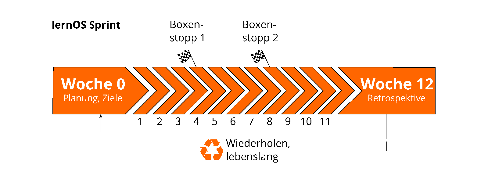

Lebenslanges Lernen mit lernOS
Lebenslanges Lernen mit lernOS
lernOS Wheel: Mindset, Skillset und Toolset
Durch die Menge an verfügbarer Literatur, das Internet und soziale Netzwerke haben wir Zugriff auf eine große Menge von Experten, Communities, Tools, Informationen, und Lerninhalte. Ob wir diese nutzen oder nicht, hängt von unserer persönlichen Einstellung zum lebenslangen Lernen ab. Ist es für uns wichtig genug, dass wir uns dafür ausreichend Zeit nehmen? Leider fühlen wir uns oft zu beschäftigt und nehmen uns diese Zeit nicht:

Für den Umstieg von quadratischen auf runde Räder des Lernens braucht es folglich eine ganzheitliche Sicht auf das eigene Lernen, die die eigene Haltung und Werte mit einschließt:
- Mindset - Welche Haltung habe ich zum lebenslangen Lernen und ist es mir wichtig?
- Skillset - wie gut sind meine Kompetenzen und Fähigeiten in Bezug auf das Lernen?
- Toolset - Nutze ich zeitgemäße Tools und Methoden in meinen Lernprozessen?

Beim Mindset sind insbesondere die Haltungen Growth Mindset von Carol Dweck und Open Mindset von Gary Hamel wichtig.
Das Growth Mindset beschreibt eine Haltung, die prinziell davon ausgeht, dass ich alles lernen kann, was ich mir vornehme. Probleme und Hindernisse spornen mich nur noch mehr an. Fehler sehe ich als Chance zum Lernen und nicht als Scheitern. Das Gegenteil des Growth Mindsets ist das Fixed Mindset.

ProTip: Schaue dir das Video Developing a Growth Mindset von Carol Dweck an, um mehr darüber zu erfahren.
In seinem Buch Humanocracy stellt Gary Hamel das Open Mindset dem Closed Mindset gegenüber. Ein Mensch mit einem geschlossenen Mindset ist gefangen in seinen Paradigmen und Vorannahmen. Neue Erkenntnisse werden nicht wahrgenommen, ignoriert oder aktiv abgelehnt. Ein Open Mindset dagegen ist nach Hamel durch vier Verhaltensweisen gekennzeichnet (Buch Humanocracy):
- Verhalten 1: Nicht geprüfte Annahmen in Frage stellen. Das gelingt jungen Menschen und Novizen besser, als langjährigen Expert*innen. Man kann jedoch daran arbeiten, immer mit einem "Anfängergeist" an neue Themen heranzugehen.
- Verhalten 2: Achstsam in Bezug auf Veränderungen sein. Trends und Innovationen werden oft außerhalb oder an den Randbereichen der eigenen Wahrnehmung sichtbar. Der Besuch ungewohnter Orte oder Gemeinschaften und das Lesen ander Literatur können "Antennen" für neues sein.
- Verhalten 3: Fähigkeiten und Kompetenzen in neuer Weise nutzen. Wir sind gewohnt, unsere Fähigkeiten in immer gleichen Umfeldern einzusetzen. Ändern sich aber die Rahmenbedingungen, können bestehende Fähigkeiten und Kompetenzen für gänzlich andere Aufgaben wertvoll sein.
- Verhalten 4: Unerfüllte Bedürfnisse entdecken. Gibt man dem Fühlen neben dem Denken genug Raum, zeigen sich auf einmal oft neue Möglichkeiten. Neben dem rationalen Denken und der wissenschaftlichen Methode sollte immer genug Raum für Emotionen sein.
Skillset: Deine Fähigkeiten
Seit den 1980er Jahren sind Fähigkeiten, wie das Lösen von Problemen und der Austausch mit anderen, für den eigenen Erfolg am wichtigsten. Dazu gehören insbesondere Fähigkeiten, die in Zukunft nicht einfach durch Automatisierung und künstliche Intelligenz ersetzt werden können. Um fit für das 21. Jahrhundert zu werden, solltest du folgende fünf Fähigkeitsbereiche trainieren (Framework for 21st Century Learning, DigiComp 2.1 Framework):

Du kannst die folgende Tabelle für eine Selbsteinschätzung am Anfang eines Learning Sprints nutzen. Wir nutzen die Stufen 1-5 aus dem Dreyfus Model of Skill Acquisition (1 = Novize, 2 = Fortgeschrittener Anfänger, 3 = Kompetent, 4 = Profi, 5 = Experte). Trage deine aktuelle Stufe in die Spalte "Ist" und deine angestrebte Stufe in die Spalte "Soll". Auf der Basis kannst du den Fokus für deine Lernaktivitäten bestimmen.
| Fähigkeit | Ist | Soll |
|---|---|---|
| Kreativität & Innovation | ||
| Kreativ denken | ||
| Kreativ mit anderen arbeiten | ||
| Innovationen umsetzen | ||
| Kritisches Denken & Problemlösen | ||
| Ermittlung von Bedürfnissen und technologischen Möglichkeiten | ||
| Dingen effektiv auf den Grund gehen | ||
| Urteile und Entscheidungen treffen | ||
| Technische und nicht-technische Probleme lösen | ||
| Kreativ Technologien zur Lösung von Problemen einsetzen | ||
| Kommunikation | ||
| Gedanken und Ideen klar und effektiv artikulieren | ||
| Effektiv zuhören und Bedeutung erkennen | ||
| Kommunikation nutzen, um zu informieren, zu unterrichten, zu motivieren und zu überzeugen | ||
| Vielfältige Medien und Technologien nutzen | ||
| Effektiv in verschiedenen Umgebungen kommunizieren | ||
| Kollaboration | ||
| Effektiv und respektvoll in gemischten Teams arbeiten | ||
| Flexibilität und Bereitschaft zeigen sowie bei notwendigen Kompromissen unterstützen, um ein gemeinsames Ziel zu erreichen | ||
| Verantwortung für die gemeinsame Arbeit übernehmen und einzelne Beiträge wertschätzen | ||
| Mit digitalen Medien interagieren, sich beteiligen, austauschen und zusammenarbeiten | ||
| Digitale Identität verwalten | ||
| Digital Literacy | ||
| Surfen, suchen, Daten, Informationen und digitale Inhalte filtern | ||
| Auswertung und Verwaltung von Daten, Informationen und digitalen Inhalten | ||
| Schutz digitaler Geräte und personenbezogener Daten | ||
| Entwicklung, Integration und Überarbeitung digitaler Inhalte | ||
| Umgang mit Urheberrechten und Lizenzen | ||
| Programmieren, Scripten und Kodieren |
ProTip: Das Mozilla Web Literacy Framework bietet Übungen zu Digital Literacy und Fähigkeiten des 21. Jahrhunderts.
Toolset: Digitale Tools, die du verwendest
Das Web 2.0 und die sozialen Medien gibt es seit 2005. Nicht jeder muss alle digitalen Tools kennen, aber man sollte einen Überblick haben, die Prinzipien kennen und die richtigen Tools für sich auswählen. Die folgende Liste gibt daher einen Überblick über die für lernOS wichtigsten Tools:
- Office- & Produktivität, z.B. Dropbox, Evernote, FreeMind, G Suite, MindManager, Office 365, OneNote, SharePoint, Trello, XMind
- Chat & Messenger, z.B. Google Hangouts Chat, Mattermost, Microsoft Teams, Rocketchat, Slack, Telegram, Threema, WeChat, WhatsApp
- Soziale Netwerke, z.B. IBM Connections, Jive, LinkedIn, Mastodon, Twitter, Workplace by Facebook, Xing, Yammer
- Videokonferenz, z.B. Google Hangouts Meet, GoToMeeting, Microsoft Teams, Skype, Skype for Business, WebEx, Zoom
- Weblogs & Wikis, z.B. Confluence, DokuWiki, LinkedIn (Artikel), MediaWiki, Medium, Tumblr, Wikipedia, WordPress
lernOS Flow: Arbeitsablauf zum strukturierten Arbeiten und Lernen
Der Ansatz von lernOS für Dich besteht aus einer Kombination von drei in der Praxis bereits erprobten Methoden, ergänzt um Elemente des persönlichen Wissensmanagements (PKM):
- Objektives & Key Results (OKR) - ermöglicht zielgerichtetes und fokussiertes Arbeiten und Lernen durch die Definition von Lernzielen und gewünschten Ergebnissen (Objectives & Key Results bei Google).
- Getting Things Done (GTD) - produktiv und stressfrei Arbeiten und Lernen, indem der alltägliche Informationsstrom in einem System strukturiert wird (Getting Things Done von David Allen).
- Working Out Loud (WOL) - möglichst offenes Teilen im Netzwerk zu teilen und über die eigenen Ziele und den Arbeitsablauf zu berichten (WOL Definition von Bryce Williams und WOL Circle Guides von John Stepper)
Um die einzelnen Methoden zu erlernen, stellt dieser Leitfaden jeweils einen Lernpfad mit Aufgaben und Übungen zur Verfügung. Mit welchen der Lernpfade du beginnst, hängt an deinen Bedürfnissen. Bist du auf der Suche nach Purpose und dem richtigen Ziel, beginne mit dem OKR Lernpfad. Hast du mit Informationsflut und Aufgabenvielfalt zu kämpfen, dann ist der GTD Lernpfad der richtige für dich. Hast du das Gefühl, das Rad ständig neu zu erfinden und nicht auf das kollektive Wissen der Welt zugreifen zu können? Dann beginne mit dem WOL Lernpfad.

Der lernOS for You (4U) Flow ist ein Workflow für die Organisation von Wissensarbeit, der die drei Methoden OKR, GTD und WOL kombiniert und um Ansätze des persönlichen Wissensmanagements (PKM) ergänzt. Er sieht auf den ersten Blick recht unübersichtlich aus, ist aber Schritt für Schritt leicht zu verstehen und anzuwenden. Das Bild ist am besten von links nach rechts zu lesen. Es gibt zwei mögliche Startpunkte (grüne Kreise) und einen Endpunkt (roter Kreis). Mit dem unteren Startpunkt befasst man sich eher mit dem kurzfristigen und operativen Umgang mit Wissen und Lernen. Der obere Startpunkt bildet die langfristige und strategische Perspektive ab.

lernOS Sprints: Neues lernen in nur 13 Wochen
lernOS wird in Zeiträumen von 13 Wochen, die wie bei Scrum Learning Sprints genannt werden, praktiziert. Normalerweise laufen die Sprints jeweils in einem Quartal des Jahres. Der Rhythmus kann bei Bedarf angepasst werden. Ein Sprint kann alleine (lernOS Solist), zu zweit (lernOS Tandem) oder in einer Gruppe von 4-5 Personen (lernOS Circle) durchlaufen werden.

So läuft ein lernOS Sprint ab:
- Woche 0: Die Sprint Planung. Versteht jeder die Vorgehensweise? Wann wird der wöchentliche Termin (Weekly) stattfinden? Welcher Lernpfad wird für den Sprint gewählt? Bei lernOS Tandems und Circles: Wird das Weekly als persönliches Treffen oder virtuell stattfinden? Welche Tools werden für die Kommunikation und Dokumentation verwendet? Ist jeder in der Lage, die Tools zu verwenden?
- Wochen 1-11: Es wird an den Zielen und gewünschten Ergebnissen gearbeitet und der Fortschritt im Weekly kritisch reflektiert. Ein Lernpfad schlägt Übungen vor, die wie bei CoderDojos Katas genannt werden. Für Einsteiger*innen (NOOBs) stehen drei Lernpfade zur Verfügung: WOL-Lernpfad (offenes und vernetztes Arbeiten und Lernen), OKR-Lernpfad (zielgerichtetes und fokussiertes Arbeiten und Lernen) und GTD-Lernpfad (stressfreies und produktives Arbeiten und Lernen). Die Empfehlung ist, je Sprint nur ein Lernpfad auszuwählen und in Lerntandems oder Circles die Lernpfade nicht zu mischen. Die beiden Boxenstopps in Woche 4 und Woche 8 helfen zu sehen, ob noch alle auf dem richtigen Weg sind.
- Woche 12 mit der Retrospektive: Review der finalen Ergebnisse des Sprints und Retrospektive des gesamten Prozesses. Bei Lerntandems und Circles: Die Beteiligten entscheiden, ob sie für einen weiteren Sprint zusammen bleiben wollen.
In Schule und Hochschule wird der Takt des Lernens durch Schuljahre und Semester vorgegeben. Um das Lernen danach selbstorganisiert zu stukturieren, werden die lernOS Sprints im Extremfall bis zum eigenen Lebensende eingeplant (von der Wiege bis zur Bahre), so wie das auch schon Peter Drucker praktiziert hat.
Besser alleine oder gemeinsam Lernen?
Wenn du lernOS nicht alleine praktizieren möchtest, kannst du Dich in einer Gruppe von 4-5 Personen, die Learning Circle genannt wird, zusammenschließen. Ein Circle ist eine Peer Support Gruppe, in der sich die Mitglieder gegenseitig mit Feedback, Erfahrung, Wissen und Reflexion helfen. Der Circle ist ein "Kreis des Vertrauens": was im Circle passiert, bleibt im Circle! Die Circle-Mitglieder treffen sich wöchentlich und folgen dabei einem vorgegebenen Ablauf, der den Lern- und Entwicklungsprozess strukturiert.

Einmal pro Woche trifft sich der Learning Circle. Jedes Treffen folgt einem vorgegebenen Ablauf (siehe Anhang) mit einem Check-in, Übungen (Katas) und einem Check-out. Der Zeitraum für das Weekly kann an die Bedürfnisse der Circle-Mitglieder angepasst werden. Der vorgeschlagene Zeitraum ist Freitag zwischen 11-12 Uhr.
ProTip: Kata ist anderes Wort für Übung. Es kommt aus dem Bereich des Erlernens von Programmier-Fähigkeiten im Peer-Learning-Format. Lies mehr über dieses Format unter codekata.com.
Das Weekly kann als persönliches Treffen (face-2-face) oder virtuell stattfinden. Der Circle muss Tools für die Kommunikation und Dokumentation zwischen den Treffen definieren. Folgende Anwendungen haben sich dafür in der Praxis bewährt:
- Microsoft Teams + OneNote
- Skype oder Skype for Business
- Slack
- Zoom
- CONNECT - die Community-Plattform bietet die Möglichkeit geschlossener Chat-Gruppen für den Austausch im Circle
Wenn du in deiner Organisation ein Enterprise Social Network (ESN) wie z.B. Yammer, Jive oder Connections hast, kann das für die Unterstützung von lernOS Circles auch eine gute Option sein.
ProTip: Wählt für möglichst einfache Benutzbarkeit ein Tool, das Kommunikation und Dokumentation gleichzeitig unterstützt, z.B. Microsoft Teams. In Microsoft Teams könnt Ihr den Kanal "Allgemein" für Kommunikation, die Audio-/Video-Konferenz-Funktion für virtuelle Meetings und ein OneNote-Notizbuch zur Dokumentation nutzen.